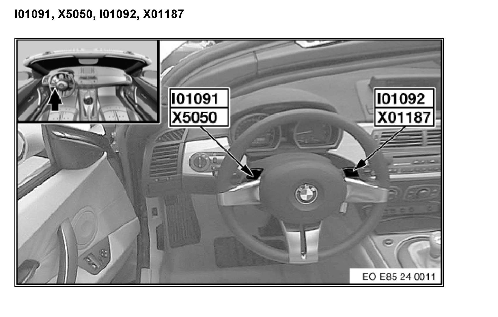

Operation CHARM
: Car repair manuals for everyone.
Home
>>
BMW
>>
2007
>>
X3 3.0si (E83) L6-3.0L (N52K)
>>
Repair and Diagnosis
>>
Locations
>>
Connector Locations
>>
Connectors From X5
>>
X5050 No Adapter
>>
I01091, X5050, I01092, X01187 (SMG Sequential Manual Transmission)
I01091, X5050, I01092, X01187 (SMG Sequential Manual Transmission)
